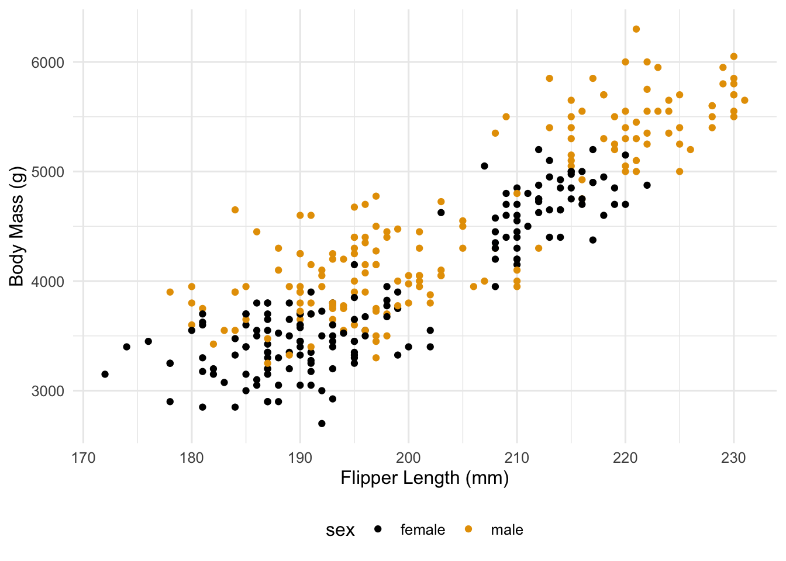
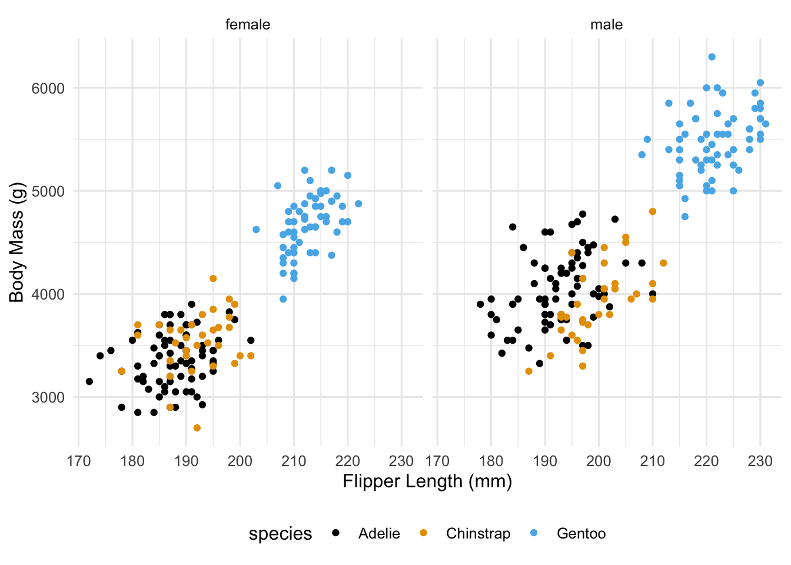
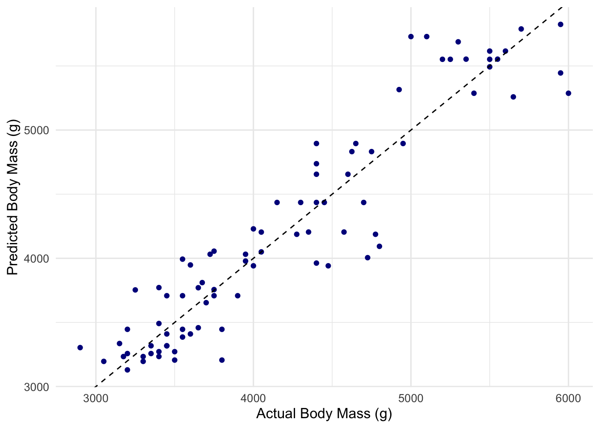

Throughout this notebook, we will use the penguins data set available through the modeldata package which gets loaded with the tidymodels family of packages. This data set contains information about penguins collected from 3 different species over three different islands. Each row in the data set corresponds to a single penguin for which they species, island, sex, and four physical body measurements are recorded.
Table 1: The first 6 rows of the penguins data set.
species
island
bill_length_mm
bill_depth_mm
flipper_length_mm
body_mass_g
sex
Adelie
Torgersen
39.1
18.7
181
3750
male
Adelie
Torgersen
39.5
17.4
186
3800
female
Adelie
Torgersen
40.3
18.0
195
3250
female
Adelie
Torgersen
NA
NA
NA
NA
NA
Adelie
Torgersen
36.7
19.3
193
3450
female
Adelie
Torgersen
39.3
20.6
190
3650
male
There is some missing data in the data set so the first thing we will do is remove any observation with missing data.
penguins <- penguins %>%drop_na()
Now, we are interested in two types of problems:
A classification problem where we want to predict the sex of a penguins based on its physical measurements and perhaps the species and island it was collected from.
A regression problem where we want to predict the body mass of a penguin based on its physical measurements and perhaps the sex and species as well.
For both problems, we will use the nearest neighbors algorithm to make our predictions. Further, we will use the tidymodels framework to perform the analysis. This framework is built on top of the tidyverse and provides a consistent interface for performing machine learning tasks. Later in the course, we will study the tidymodels framework in more detail. For now, we will just use it to perform our analysis.
Before getting into an analysis, let’s take a look at some exploratory plots of the data. Figure 1 shows how male and female penguins differ by flipper length and body mass.
Code
penguins %>%ggplot(aes(x = flipper_length_mm, y = body_mass_g, color = sex)) +geom_point() +theme(legend.position ="bottom") +scale_color_colorblind() +labs(x ="Flipper Length (mm)", y ="Body Mass (g)")

Figure 1: Plot to see if the flipper length and body mass can distinguish the sex of a penguin.
It appears that male penguins tend to be heavier than female penguins but just body mass and flipper length do not clearly separate male and female penguins. Most likely, this is do to the fact that one or more species of penguins are mixed together in this data set.
Figure 2 reproduces Figure 1 tp show how male and female penguins differ by flipper length and body mass but also incorporates differences across species.
Code
penguins %>%ggplot(aes(x = flipper_length_mm, y = body_mass_g, color = species)) +geom_point() +facet_wrap(~sex) +theme(legend.position ="bottom") +scale_color_colorblind() +labs(x ="Flipper Length (mm)", y ="Body Mass (g)")

Figure 2: Plot to see if the flipper length and body mass can distinguish the sex of a penguin where we also take into account difference across species.
Now we can see more clearly that within each species, male penguins tend to weigh more and have longer flippers. Furthermore, we can see that a longer flipper tends to correspond with a greater body mass.
KNN Example
For both our classification and regression problems, we will use the nearest_neighbor() function from the tidymodels package. This function takes a formula as its first argument and a data frame as its second argument. The formula specifies the outcome variable and the predictor variables. Before we build our models, we will need to split the data into a training set and a testing set. We will use the initial_split() function to do this. This function takes a data frame as its first argument and a proportion as its second argument. The proportion specifies the proportion of the data that should be in the training set. The function returns a list with two elements: train and test. Each element is a data frame containing the training and testing data, respectively.
Since we are using nearest neighbors, we will need to normalize our quantitative predictors which can be done in a preprocessing step using functions from the recipes package which is loaded with the tidymodels family of packages.
Now, we define out model specification using the nearest_neighbor() function from the parsnip package which is loaded with the tidymodels family of packages.
Now we need to fit our model and use it to make predictions on the test set so we can assess the predictive accuracy of our model. A good way to do this is with a model workflow as follows.
# A tibble: 1 × 3
.metric .estimator .estimate
<chr> <chr> <dbl>
1 rmse standard 298.
Let’s plot our predicted values against the actual values.
peng_mass_fit %>%predict(penguins_test) %>%cbind(penguins_test) %>%ggplot(aes(x=body_mass_g, y = .pred)) +geom_point(color="darkblue") +geom_abline(linetype="dashed") +labs(x ="Actual Body Mass (g)", y ="Predicted Body Mass (g)")

Let’s see how the results compare across sex and species.
peng_mass_fit %>%predict(penguins_test) %>%cbind(penguins_test) %>%ggplot(aes(x=body_mass_g, y = .pred, color=sex)) +geom_point() +geom_abline(linetype="dashed") +facet_wrap(~species) +scale_color_colorblind() +labs(x ="Actual Body Mass (g)", y ="Predicted Body Mass (g)")